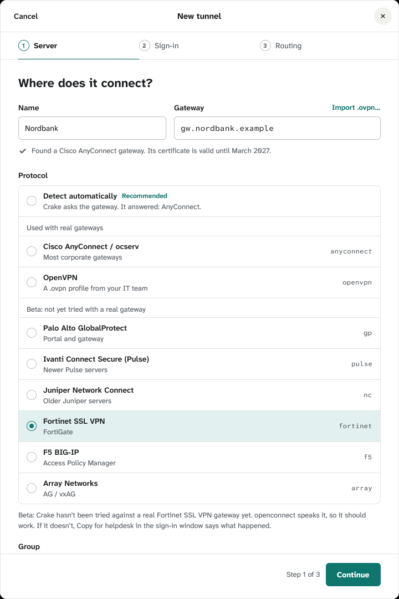
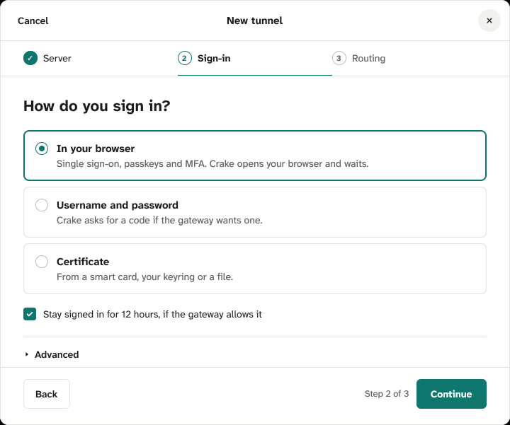

Proposal: IPsec tunnels in New tunnel (CLAUDE.md, 7k)
Crake's service can now run IPsec (IKEv2) tunnels with strongSwan, on Linux. That's how FortiGates
from FortiOS 7.6.3 on take remote workers, and many other gateways too. What's missing is a way to add one. For it,
your IT team gives the gateway, the gateway's key (often called the pre-shared key) and your
username; sometimes also the company's domains and the gateway's identity. “Today” is captured from
the app at 1:1; the rest is drawn at the app's size. marks what changes.
Two choices for you:
Step 1 for every protocol: the protocol list folds once you've chosen one, and “Import .ovpn…” shows only
while the protocol is “Detect automatically” or OpenVPN (1). This narrows what we decided on 2026-10-18 (“in
every state”). Recommended.
Where the company's domains go: step 1, under the key (A, recommended), or step 3 (B) (2).
1 · Step 1: IPsec chosen
A new card, “IPsec (IKEv2)”, under Beta until it's been used against a real gateway (your FortiGate
first). Once a protocol is chosen, the list folds to that row and today's “Choose the protocol yourself” (today it
folds only after detection answered or a .ovpn was imported). So the key, which IPsec needs before Continue, sits
right under its gateway instead of 600 px further down, under the fold. Group's place, which IPsec doesn't use,
takes the key and the domains, on the Name and Gateway grid.
Today (the list opened, a protocol chosen by hand: it stays open)

After: IPsec chosen, the list folded, the key typed (domains here: option A)
CancelNew tunnel
1Server
2Sign-in
3Routing
Where does it connect?
Name
Nordbank
Gateway
gw.nordbank.example
Protocol
IPsec (IKEv2)BetaFortiClient's “IPsec VPN”, and other IKEv2 gatewaysipsec
Choose the protocol yourself9 more
Beta: Crake hasn't been tried against a real IPsec gateway yet. If it doesn't connect, Copy for helpdesk in the sign-in window says why.
Gateway's keyShow
••••••••••••
From your IT team, who may call it the pre-shared key. Only Crake's service can read it.
Company domainsoptional
nordbank.internal nordbank.example
Names under them go to Nordbank's DNS. Without them, Crake asks public DNS first and finds those names a moment later.
Step 1 of 3Continue
What changes for every protocol: the list folds when a row is picked,
as a menu closes after a choice, and “Choose the protocol yourself” opens it again. “Import .ovpn…” shows while
the protocol is Detect automatically (where someone holding a .ovpn file starts) or OpenVPN, and goes once another
one is picked; its label row keeps its height, so nothing moves. Continue is off until the key is there, with no
error line while the field is still empty: its help line says where the key comes from. Show becomes Hide, and the
key is in mono while shown. Several domains scroll sideways in their field, as any text field does.
2 · Your choice: where the company's domains go
AnyConnect and OpenVPN gateways hand Crake the company's domains; an IPsec gateway can't (strongSwan
receives them and passes them on to no one). So for IPsec they're typed, when IT gives them.
AStep 1, under the key (as drawn in 1), recommended
What IT hands out for a tunnel is asked in one step. The domains say what's
behind the gateway, which is step 1's question (“Where does it connect?”), and step 3 stays as it is for every
tunnel. It also keeps them away from “Only what I list”, which takes names too, for a different purpose.
BStep 3, under the routing choices
CancelNew tunnel
Server
Sign-in
3Routing
What should go through it?
Learn as it goesRecommendedOnly hosts that don't answer directly.
Ask me firstA notification for each new host.
Only what I listNames and networks you add, nothing else.
Names under them go to Nordbank's DNS. Without them, Crake asks public DNS first and finds those names a moment later.
BackStep 3 of 3Add and connect
The domains sit with what they affect, which names go
where, but next to “Only what I list”, whose list takes names too: one says where to ask a name, the other what
may go through, and side by side they're easy to confuse.
3 · Step 2: how it signs in
IPsec signs in with a username and password (the gateway asks for them over EAP, as it asks
FortiClient). So step 2 shows that one way as a plain card, as OpenVPN's step 2 shows “As the profile says”, with
today's Username field. No “Stay signed in”: an IPsec gateway gives no session to keep, so the password is kept in
your keyring instead: the sign-in window's “Remember the password in your keyring” is ticked from the start (5). The gateway's identity, which few gateways ask
for, goes under today's Advanced.
Today (an AnyConnect gateway)

After (IPsec; Advanced opened)
CancelNew tunnel
Server
2Sign-in
3Routing
How do you sign in?
Username and passwordNordbank's gateway asks for them when you switch it on.
Username
ondrej.simon
Advanced
Gateway's identityoptional
Only if your IT team gave one, like vpn.nordbank.example. Crake then signs in only to a gateway that proves it's that one.
BackStep 2 of 3Continue
The browser and certificate ways aren't offered for IPsec yet (strongSwan can
do certificates; it's for later). “ondrej.simon” is the demo's username. Not built yet: craked takes the username
from here (today it asks in the sign-in window), and the kept password.
4 · Step 1's other states
Said under what it's about, in ink, as today's lines are.
Detect automatically, at an IPsec gateway (the Detect row's line; today “Crake asked; the gateway didn't say.”)
It didn't answer as an SSL VPN. If your IT team said IPsec, choose IPsec (IKEv2) below.
A .ovpn imported, then IPsec chosen (the profile is dropped; the gateway it named stays, typed)
Not using initech.ovpn: IPsec doesn't take a profile. Use it again
strongSwan isn't installed (the card's “Not installed”, as for openconnect and openvpn)
On Windows and macOS, for now (the card's “Not available”)
Crake runs IPsec on Linux only for now.
Not a domain
“https://nordbank.internal” isn't a domain. Just the domain, like nordbank.internal; several are separated by spaces.
The install command is long because Ubuntu splits strongSwan into five
packages, and without --no-install-recommends it also starts a strongSwan service of its own
that Crake doesn't need. When Crake's package brings them (planned), this line is rare.
5 · The sign-in window, and Edit later
Today's sign-in window, with today's question and failure shapes (sign-in.html). Switched on, an IPsec
tunnel asks for its password unless the keyring has it. After a refusal it asks again, with the username filled in,
since either can be wrong. A key the gateway turns down is a failure only IT can fix, so it ends in today's failure
shape, with Change the key… to act on it. Copy for helpdesk and reports never hold the key or the password.
Asked for the password (today's question)
Nordbank asks for your password
As ondrej.simon
Password
••••••••
Remember the password in your keyring
CancelContinue
Asked again after a refusal
Nordbank asks for your username and password
Nordbank didn't accept that username or password.
Username
ondrej.simon
Password
Remember the password in your keyring
CancelContinue
Signing in (today's steps)
Signing in to Nordbank
This window updates by itself.
Reached gw.nordbank.example
Signing in as ondrej.simon
Tunnel up
Cancel
The gateway turned the key down (today's failure shape)
Couldn't sign in to Nordbank
The key doesn't match Nordbank's gateway. Your IT team can tell you the right one.
Reached gw.nordbank.example
The gateway's key didn't match
strongSwan said: authentication of 'gw.nordbank.example' with pre-shared key failed
Copy for helpdesk
CloseChange the key…
The step numbers are drawn at 11 px, as the app draws them today
(new_tunnel/view.rs), which is under DESIGN.md's 12 px; that's fixed in the app apart from this proposal.
While it signs in, the window shows today's steps, as for every tunnel (drawn below). Not built yet: telling a refused key from a refused password (craked says only
that the sign-in was refused).
Edit, step 1: the key kept
Gateway's keyChange…
Kept by Crake's service
After Change…
Gateway's keyShow
The new key replaces the kept one when you save. Keep the old key